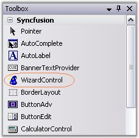
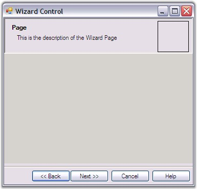
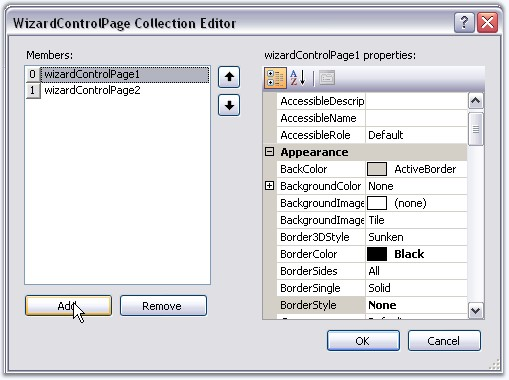
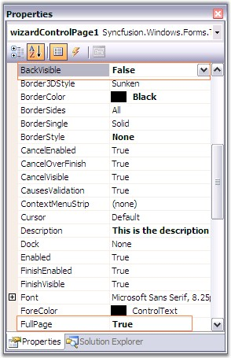
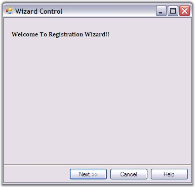

This section will guide you to create a basic wizard using the Wizard control.
To create a basic wizard, follow the below steps.
· Add the WizardControl from the Toolbox to the form, in the designer.

Figure 1207: Wizard Control in ToolBox
· Set the WizardControl.Dock property to Fill.

Figure 1208: Basic Wizard Control Added to the Form
· Wizard Control lets you add multiple pages in a single wizard. You can add pages to the wizard container by four different ways. They are,
· "Add Page" option in the smart tag.
· Accessing Add Page command in properties grid.
· Context menu of the Wizard control.
See Options to Add Page, Remove Page, Previous page and Next Page topic for more details.
· Accessing WizardControl.WizardPages property will invoke WizardControlPage Collection Editor which also lets you add or remove pages.

Figure 1209: WizardControlPage Collection Editor invoked by using WizardPages Property
Programmatically, the pages can be added to the wizard container as follows.
|
[C#]
this.wizardControl1.WizardPages = new Syncfusion.Windows.Forms.Tools.WizardControlPage[] {this.wizardControlPage1, this.wizardControlPage2,this.wizardControlPage3}; this.wizardControl1.SelectedWizardPage = this.wizardControlPage2; |
|
[VB.NET]
Me.wizardControl1.WizardPages = New Syncfusion.Windows.Forms.Tools.WizardControlPage() {Me.wizardControlPage1, Me.wizardControlPage2,Me.wizardControlPage3} Me.wizardControl1.SelectedWizardPage = Me.wizardControlPage2 |
· Wizard Control comes with properties which controls its appearance and behavior. Set FullPage property of WizardControlPage1 to True if you wish to hide the header portion in the first page. Put a label control on this wizard page with introductory text. Also set BackVisible property of wizard page to False to hide the back button since this is the first page.

Figure 1210: BackVisible and FullPage Properties of WizardControlPage
· The output will be as follows.

Figure 1211: Simple Front page of Wizard Control
See Also